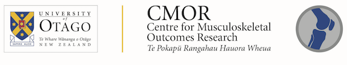

The Centre for Musculoskeletal Outcomes Research (CMOR) aims to conduct and disseminate research addressing decision-making and outcomes for patients with musculoskeletal disorders.
CMOR is a multidisciplinary community of researchers, clinicians, policy makers and educators dedicated to improving patient health outcomes. We do this through research across the spectrum of clinical epidemiology and outcomes research, including epidemiology, clinical trials, health economics, implementation, evaluation, and health services research.
About us
CMOR is a research centre within the University of Otago, located within the Orthopaedic section, Department of Surgical Sciences, Dunedin School of Medicine, and strongly affiliated with clinical services of the Southern District Health Board (Dunedin Hospital and associated centres). However, its membership is not restricted by location or affiliation. CMOR draws associate members from a broad range of disciplines, from organisations locally, nationally and internationally. Our members are active in a range of productive international collaborations.
CMOR provides expert skills and research training in the fields of orthopaedic and musculoskeletal health technologies and service delivery.
Our research portfolios include outcome measure evaluation, occupational and public health issues, clinical epidemiology, economic evaluations and health resource allocation issues affecting primary and secondary care settings.
Our research
Clinical outcomes research
- Arthroplasty
- Clinical epidemiology
- Clinical outcomes research
- Computer simulation modelling
- Diagnostic tests
- Economic evaluation
- Low back pain
- Prognostic studies
- Screening and prediction instruments
- Spine research
- Trauma
Health services research
- Health technology assessment
- Outcome assessment instruments
- Prioritisation and resource allocation
Postgraduate opportunities
PhD project: Investigate the validity of the SF-6D health utility instrument for use in the New Zealand population, particularly to ensure equitable health measurement for Māori.
This project would suit a student with interest in hauora Māori and kaupapa Māori research methodologies, and interest in using research to inform equitable health policy decision-making. The PhD programme is 3 years full-time study, to start 1 February 2022 or as soon as possible thereafter. Stipend: $30,000 p.a. for three years.
For more information, see here.
For enquiries, please contact Dr Ross Wilson Email: ross.wilson@otago.ac.nz
PhD project: Investigate the health burdens and economic inequalities arising from musculoskeletal disorders. Primarily hip OA, low back pain or shoulder disorders; the costs and effects of interventions.
Applicants must have a higher research degree or clinical doctorate, a sound background in epidemiology, clinical epidemiology, or economics, and a strong aptitude for mathematics and/or statistics. The PhD programme is 3 years full-time study. The University of Otago is a research-intensive university, rated Five Stars Plus for quality by QS World University Rankings. Tuition scholarships are available for applicants with a strong academic record.
For more information, please contact Professor J. Haxby Abbott PhD, DPT, FNZCP Email: haxby.abbott@otago.ac.nz
Contact us
We welcome your enquiries.
Please email Professor Haxby Abbott: haxby.abbott@otago.ac.nz
